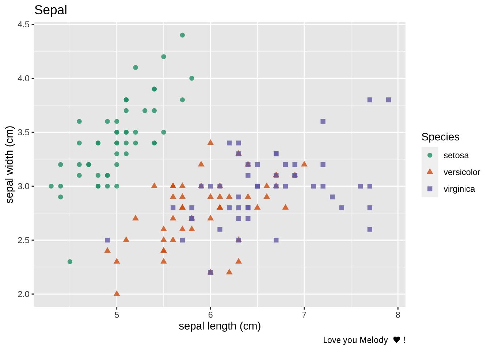

Code
```{python, echo = "fenced"}
import torch
z = torch.zeros(5, 3)
print(z)
```>> tensor([[0., 0., 0.],
>> [0., 0., 0.],
>> [0., 0., 0.],
>> [0., 0., 0.],
>> [0., 0., 0.]])When I play with machine learning using python and R, I keep wondering whether I can combine R and Python code in a better way, such as using R for data cleaning/visualization and Python for machine learning. Online resources for PyTorch are basically written using python code. However, I always struggle with pandas and numpy but prefer tidyverse for data cleaning, and data manipulation. That’s why I write this blog. I will start with the Pytorch tensor manipulation and import Pytorch tensor into R, then talk about mixing R/python data analysis with R/python visualization.

Let’s first get familiar with data manipulation using PyTorch. First, torch.zeors(R, C) function can create a zero tensor with the size of R by C.
```{python, echo = "fenced"}
import torch
z = torch.zeros(5, 3)
print(z)
```>> tensor([[0., 0., 0.],
>> [0., 0., 0.],
>> [0., 0., 0.],
>> [0., 0., 0.],
>> [0., 0., 0.]])Similarly, torch.ones(R, C) creates a tensor filled with ones with the size of R by C with dtype=torch.int16 argument can coverting elements into integer.
```{python}
i = torch.ones((5,3), dtype=torch.int16)
print(i)
```>> tensor([[1, 1, 1],
>> [1, 1, 1],
>> [1, 1, 1],
>> [1, 1, 1],
>> [1, 1, 1]], dtype=torch.int16)We can generate random numbers to tensor using torch.rand(R, C). It’s recommended to set up a random seed using torch.manual_seed(seed_num) to make sure we can replicate our random tensor.
```{python}
torch.manual_seed(1729)
r1 = torch.rand(2, 2)
print(f'A random tensor:\n {r1}')
```>> <torch._C.Generator object at 0x10d9e4cf0>
>> A random tensor:
>> tensor([[0.3126, 0.3791],
>> [0.3087, 0.0736]])```{python}
b = torch.arange(4 * 5 * 6).view(4, 5, 6)
print(f"A sequence of number arraged to 4 matrix of the size 5 X 6: \n{b}\n" )
```>> A sequence of number arraged to 4 matrix of the size 5 X 6:
>> tensor([[[ 0, 1, 2, 3, 4, 5],
>> [ 6, 7, 8, 9, 10, 11],
>> [ 12, 13, 14, 15, 16, 17],
>> [ 18, 19, 20, 21, 22, 23],
>> [ 24, 25, 26, 27, 28, 29]],
>>
>> [[ 30, 31, 32, 33, 34, 35],
>> [ 36, 37, 38, 39, 40, 41],
>> [ 42, 43, 44, 45, 46, 47],
>> [ 48, 49, 50, 51, 52, 53],
>> [ 54, 55, 56, 57, 58, 59]],
>>
>> [[ 60, 61, 62, 63, 64, 65],
>> [ 66, 67, 68, 69, 70, 71],
>> [ 72, 73, 74, 75, 76, 77],
>> [ 78, 79, 80, 81, 82, 83],
>> [ 84, 85, 86, 87, 88, 89]],
>>
>> [[ 90, 91, 92, 93, 94, 95],
>> [ 96, 97, 98, 99, 100, 101],
>> [102, 103, 104, 105, 106, 107],
>> [108, 109, 110, 111, 112, 113],
>> [114, 115, 116, 117, 118, 119]]])```{python}
ones = torch.ones(2, 3)
print(f"First tensor: \n{ones}\n")
twos = torch.ones(2, 3) * 2 # multiple each element by 2
print(f"Second tensor: \n{twos}\n")
threes = ones + twos # addition allowed when shapes of two tensors are similar
print(f"Third tensor: \n{threes}\n")
```>> First tensor:
>> tensor([[1., 1., 1.],
>> [1., 1., 1.]])
>>
>> Second tensor:
>> tensor([[2., 2., 2.],
>> [2., 2., 2.]])
>>
>> Third tensor:
>> tensor([[3., 3., 3.],
>> [3., 3., 3.]])```{python}
torch.manual_seed(1729)
a = (torch.rand(2, 2) - 0.5) * 2
print(f'A random matrix: \n{a}\n')
a_abs = torch.abs(a) # Absolute values for elements
print(f'A absolute matrix: \n{a_abs}\n')
a_asin = torch.asin(a) # trigonometric functions
print(f'Inverse sine of r: \n{a_asin}\n')
a_det = torch.det(a) # Determinant and singular value decomposition
print(f'Determinant of r: \n{a_det}\n')
a_svd = torch.svd(a)
print(f'Singlular value decomposition of r: \n{a_svd}\n')
a_std_mean = torch.std_mean(a) # Statistical and aggregate operations:
print(f'Average and standard deviation of r: \n{a_std_mean}\n')
a_max = torch.max(a)
print(f'Maximum value of r: \n{a_max}\n')
```>> <torch._C.Generator object at 0x10d9e4cf0>
>> A random matrix:
>> tensor([[-0.3748, -0.2418],
>> [-0.3827, -0.8528]])
>>
>> A absolute matrix:
>> tensor([[0.3748, 0.2418],
>> [0.3827, 0.8528]])
>>
>> Inverse sine of r:
>> tensor([[-0.3842, -0.2442],
>> [-0.3927, -1.0214]])
>>
>> Determinant of r:
>> 0.22711339592933655
>>
>> Singlular value decomposition of r:
>> torch.return_types.svd(
>> U=tensor([[-0.3909, -0.9204],
>> [-0.9204, 0.3909]]),
>> S=tensor([1.0111, 0.2246]),
>> V=tensor([[ 0.4933, 0.8699],
>> [ 0.8699, -0.4933]]))
>>
>> Average and standard deviation of r:
>> (tensor(0.2678), tensor(-0.4630))
>>
>> Maximum value of r:
>> -0.24180912971496582```{python}
a_totalSum = torch.sum(a)
print(f'global sum of r: \n{a_totalSum}\n')
a_rowSum = torch.sum(a, dim=1, keepdim=True)
print(f'row sums of r: \n{a_rowSum}\n')
a_colSum = torch.sum(a, dim=0, keepdim=True)
print(f'column sums of r: \n{a_colSum}\n')
```>> global sum of r:
>> -1.852110505104065
>>
>> row sums of r:
>> tensor([[-0.6166],
>> [-1.2355]])
>>
>> column sums of r:
>> tensor([[-0.7575, -1.0946]])If you install torch package in R. You probably found that Pytorch’s tensor object can be called directly in R as torch.Tensor.
```{r}
a_inR = py$a
class(a_inR)
```>> [1] "torch.Tensor" "torch._C._TensorBase" "python.builtin.object"Unfortunately, it does not allow you to manipulate this tensor object directly using R function. For example, if you do matrix operation, it will pop up error message.
```{r, error=TRUE}
a_inR * 2
```>> Error in a_inR * 2: non-numeric argument to binary operatorHowever, you can use python method in R style (change . to $) as long as you load reticulate package. Like:
```{r, error=TRUE}
a_inR$shape
a_inR$data
```>> torch.Size([2, 2])
>> tensor([[-0.3748, -0.2418],
>> [-0.3827, -0.8528]])Can we import PyTorch tensor to R and employ R to do some dirty works, and then export it back to python? The answer is Yes (partially). We can try out this workflow: tensor -> np.ndarray -> R matrix -> …(some manipulation) -> np.ndarray -> tensor (see diagram below). I’m not sure if it is worthy nor it is even plausible for more complicated tensor class. Note that it may make the memory stores at least three copies of the data. More experiments needed for such work. For more information about arrays in R and python, please refer to the reticulate manual.
graph LR;
tensor-->|np$array|np.ndarray;
np.ndarray-->|py_to_r|R.matrix;
R.matrix -->|some data manipulation|R.matrix;
R.matrix-->|r_to_py|np.ndarray;
np.ndarray-->|torch$from_numpy|tensor;
```{r}
np <- import("numpy", convert=FALSE)
a_data_inR = py_to_r(np$array(a_inR$data))
a_data_inR_revised = a_data_inR * 2
a_inR # original python object in R
a_data_inR_revised # revised matrix in R
```>> tensor([[-0.3748, -0.2418],
>> [-0.3827, -0.8528]])
>> [,1] [,2]
>> [1,] -0.7496002 -0.4836183
>> [2,] -0.7653229 -1.7056797```{r}
torch <- import("torch", convert=FALSE)
a_inR$data = torch$from_numpy(a_data_inR_revised)
a_inR
```>> tensor([[-0.7496, -0.4836],
>> [-0.7653, -1.7057]], dtype=torch.float64)As mentioned above, the reticulate R package provides an R interface to Python modules, classes, and functions, which allows us to extend our graphical toolbox to all packages/modules of R and Python. Currently, we can use three methods of data visualization via mixing R code and Python code:
matlibplot moduleVega-Altair module + R outputggplot2 packageLet’s try them out one by one. First, take iris data in R for example:
```{r}
library(tidyverse)
library(kableExtra)
iris_dat = iris[1:3]
iris_mat = matrix(unlist(iris_dat), nrow = nrow(iris), ncol = ncol(iris_dat))
dim(iris_mat)
```>> [1] 150 3The column sums of iris are c(876.5, 458.6, 564.7) and the row sums of first 5 rows of iris are c(10, 9.3, 9.2, 9.2, 10).
```{r}
glue::glue('Columns Sums: {colSums(iris_mat)}')
glue::glue('Row Sums: {rowSums(iris_mat[1:5, ])}')
```>> Columns Sums: 876.5
>> Columns Sums: 458.6
>> Columns Sums: 563.7
>> Row Sums: 10
>> Row Sums: 9.3
>> Row Sums: 9.2
>> Row Sums: 9.2
>> Row Sums: 10In Python chunk code of Rmarkdown, we can call data in R using r.{dataname}, in which {dataname} is the object name in R. Note that do not define r in python, otherwise r not longer become the R environment. Now we can load the R data frame in python. Please check reticulate package for more information about the rules of conversation between R and Python.
```{python}
import torch
import numpy as np
iris_ndarray = np.array(r.iris_mat)
iris_tensor = torch.from_numpy(iris_ndarray)
torch.sum(iris_tensor, dim=0, keepdim=True)
torch.sum(iris_tensor[:5,], dim=1, keepdim=True)
```>> tensor([[876.5000, 458.6000, 563.7000]], dtype=torch.float64)
>> tensor([[10.0000],
>> [ 9.3000],
>> [ 9.2000],
>> [ 9.2000],
>> [10.0000]], dtype=torch.float64)In Edgar Anderson’s Iris data, we can model a prediction model given the measurements in centimeters of sepal length/width, petal length/width and the three types of species: Iris setosa, versicolor, and virginica. Each type contains 50 samples. The very first question is then “can we train a machine learning algorithm to predict whether one belongs to Setosa/Versicolor/Virginica given four characteristics?” We can fit a multinomial regression to test statistical hypotheses of the characteristics’ differences among three species:
```{r}
#| label: tbl-coef
#| tbl-cap: Coefficients of multinominal logistic regression
library(nnet)
library(MASS)
library(broom)
library(kableExtra)
iris_new = iris |>
mutate(Species = relevel(Species, "virginica"))
## A multinominal logistic regression with Species-setosa as reference group
capture.output(multinomial_fit <- nnet::multinom(Species ~ . + 0, data = iris_new,
model = TRUE),file ="/dev/null")
## Print the coefficient table
kbl(tidy(multinomial_fit, exponentiate = FALSE), digits = 2,
booktabs = TRUE, align = "c",
col.names = c("DV", "IV", "b(logit)", "SE", "t.value", "p.value")) |>
kable_styling(bootstrap_options = c("condensed", "hover"), html_font = "Maven Pro")
```| DV | IV | b(logit) | SE | t.value | p.value |
|---|---|---|---|---|---|
| setosa | Sepal.Length | 8.11 | 106.99 | 0.08 | 0.94 |
| setosa | Sepal.Width | 13.13 | 157.28 | 0.08 | 0.93 |
| setosa | Petal.Length | -18.55 | 76.14 | -0.24 | 0.81 |
| setosa | Petal.Width | -13.70 | 34.79 | -0.39 | 0.69 |
| versicolor | Sepal.Length | 6.33 | 2.48 | 2.55 | 0.01 |
| versicolor | Sepal.Width | 6.62 | 2.53 | 2.62 | 0.01 |
| versicolor | Petal.Length | -8.44 | 3.47 | -2.43 | 0.02 |
| versicolor | Petal.Width | -10.28 | 3.46 | -2.97 | 0.00 |
As shown in Table 1 , it seems that multinominal logistic regression suggests none of the four features can significantly differentiate species but this could be misleading. This is because there are underlying correlations between sepal width/length and petal width/length. Next step is we can use matplotlib module to explore the relationships among four characteristics.
```{python, out.width = "80%", out.height = "100%", dpi = 200, fig.retina = 1}
import numpy as np
import matplotlib.pyplot as plt
import matplotlib.cm as cm
import random
import seaborn
seaborn.set(style='whitegrid'); seaborn.set_context('talk')
from sklearn.datasets import load_iris
iris_data = load_iris()
n_samples, n_features = iris_data.data.shape
def Show_Diagram(x_label,y_label,title):
plt.figure(figsize=(10,8))
plt.scatter(iris_data.data[:,x_label], iris_data.data[:,y_label], c=iris_data.target, cmap=cm.viridis, alpha = 0.5, label = iris_data.target_names)
plt.xlabel(iris_data.feature_names[x_label]); plt.ylabel(iris_data.feature_names[y_label]); plt.title(title)
plt.legend(('setosa', 'versicolor', 'virginica'))
plt.show();x_label = 2;y_label=3;title='Petal'
Show_Diagram(0,1,'Sepal')
Show_Diagram(2,3,'Petal')
```

Alternatively, we can use python data and module Vega-Altair to compile a interactive graphical object to a json file (.to_json()). Then we can plot it in R using as_vegaspec function.
```{python compile}
# import altair with an abbreviated alias
import altair as alt
import pandas as pd
label_dict = {0: 'setosa', 1: 'versicolor', 2: 'virginica'}
iris = pd.DataFrame(
data= np.c_[iris_data['data'], iris_data['target']],
columns= iris_data['feature_names'] + ['target']
)
iris['target'] = iris['target'].replace(label_dict)
chart1 = alt.Chart(iris).mark_point().encode(
alt.X('sepal length (cm):Q').scale(domain=(4,9)),
alt.Y('sepal width (cm):Q').scale(domain=(1.5,5)),
alt.Color('target:N').scale(scheme='dark2'),
alt.Shape('target:N')
).interactive()
vw = chart1.to_json()
``````{r display}
#| label: fig-vega1
#| fig-cap: An interactive plot using python altair
#| fig-cap-location: top
#| results: asis
as_vegaspec(py$vw)
```Alternatively, we can use ggplot2 R package + python data to plot the scatter plots, which I prefer.
```{r}
library(ggplot2)
library(RColorBrewer)
library(dplyr)
## A function to convert python iris to R version of iris
tidy_python_data <- function(iris_from_python) {
dat <- iris_from_python$data
dat <- apply(dat, 2, as.numeric)
colnames(dat) <- iris_from_python$feature_names
Species = as.character(factor(iris_from_python$target, labels = iris_from_python$target_names))
dat = as.data.frame(cbind(dat, Species = Species))
dat <- dat |>
mutate(across(-Species, \(x) as.numeric(x)))
dat
}
``````{r}
library(emojifont)
iris_from_python = tidy_python_data(iris_from_python = py$iris_data)
ggplot(iris_from_python) +
geom_point(aes(x = `sepal length (cm)`, y = `sepal width (cm)`, color = Species, shape = Species), size = 2, alpha = 0.8) +
labs(title = 'Sepal', caption = 'Love you Melody ♥ !') +
scale_color_brewer(palette = 'Dark2')
```
```{r}
ggplot(iris_from_python) +
geom_point(aes(x = `petal length (cm)`, y = `petal width (cm)`, color = Species, shape = Species), size = 2, alpha = 0.8) +
labs(title = 'Petal', caption = 'Love you Melody ♥ !') +
scale_color_brewer(palette = 'Dark2')
```
It appears that its hard to differentiate versicolor with verginica in terms of sepal and petal but setosa is more smaller in petal width/length and sepal length but relative long sepal width.
Alternatively, there is a R package called torch, which is built directly on top of libtorch, a C++ library that provides the tensor-computation and automatic-differentiation capabilities. However, to the date I wrote this post, the version of torch is 0.11.0, which suggests that the package is still far from well developed.
```{r}
library(torch)
library(luz)
library(torchvision)
# torch_tensor(1, device = 'cpu')
```